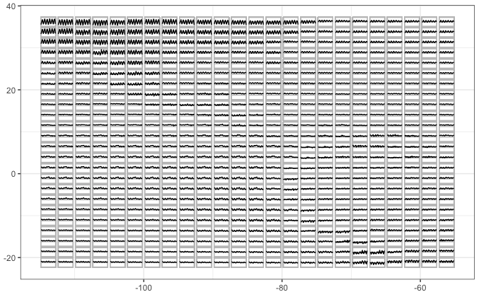
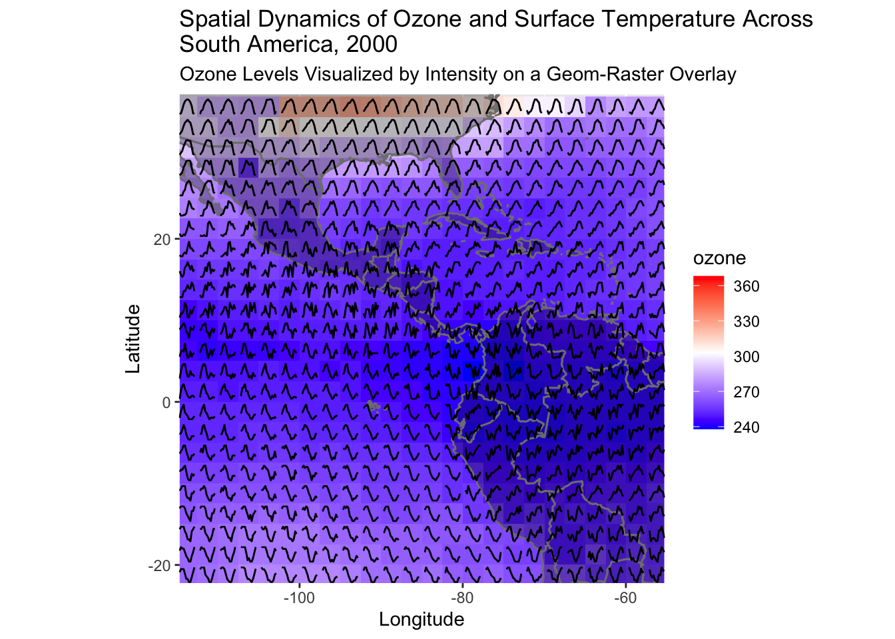

I’m Maliny, a Master of Business Analytics student at Monash University, graduating in late 2024. My academic and personal journey is anchored in a passion for understanding our world and environmental impact through data.
Curiosity drives me to learn and explore; I’ve developed skills in R, Python, and recently, a declarative language called MiniZinc. I’m keen on opportunities to apply my data analysis skills, especially in areas promoting environmental sustainability or leveraging data for positive change.
Glyph map for cubble package
Tests
Easy: Run the glyph map examples

Geom Glyph Example
Medium: Create an example to be used as a glyph on a map
# Add Glyph for (i in unique_grid) { data <- climate_data |>filter(id == i) lat_val <- data$lat[1] # Latitude at grid i long_val <- data$long[1] # Longitude at grid i# Create the glyph using the custom `plot_glyph` function p <-plot_glyph(data)# Add the glyph as an annotation base_plot <- base_plot +annotation_custom(ggplotGrob(p), xmin = long_val - x_size, xmax = long_val + x_size,ymin = lat_val - y_size, ymax = lat_val + y_size)}# Print the Glyph Mapprint(base_plot)

To illustrate the dynamic interplay between ozone levels and surface temperature across South America in 2000, I constructed a glyph map with a two-fold visual approach. First, I established a base map utilizing geom_raster to display ozone values, overlaid with the continent’s silhouette for geographical context. This raster layer employs a gradient color scheme, transitioning from blue to red, to represent the varying intensities of ozone concentration.
The second layer of visualization introduces the glyph element: a series of line graphs representing the time series of surface temperatures for each unique grid location. I crafted these glyphs with a custom function, plot_glyph, designed to generate a line plot for the given data slice.
For each grid point, identified by its unique id, I extracted the corresponding latitude and longitude values and deployed the plot_glyph function to produce a miniaturized time series plot. This glyph encapsulates the temporal pattern of surface temperatures throughout the year 2000.
I then meticulously positioned each glyph onto the base map using annotation_custom, aligning them with their geographic counterparts and fine-tuning their spatial footprint through xmin, xmax, ymin, and ymax parameters. The resulting visualization is a composite map that fuses the static backdrop of ozone distribution with the dynamic narrative of temperature fluctuations, offering a nuanced perspective on environmental patterns over space and time.
HARD: Small change to geom_glyph in the cubble package and create a pull request
Wickham H, Averick M, Bryan J, Chang W, McGowan LD, François R, Grolemund G, Hayes A, Henry L, Hester J, Kuhn M, Pedersen TL, Miller E, Bache SM, Müller K, Ooms J, Robinson D, Seidel DP, Spinu V, Takahashi K, Vaughan D, Wilke C, Woo K, Yutani H (2019). “Welcome to the tidyverse.” Journal of Open Source Software, 4(43), 1686. doi:10.21105/joss.01686 https://doi.org/10.21105/joss.01686.
Zhang H, Cook D, Laa U, Langrené N, Menéndez P. cubble: A Vector Spatio-Temporal Data Structure for Data Analysis. https://github.com/huizezhang-sherry/cubble, https://huizezhang-sherry.github.io/cubble/.
H. Wickham. ggplot2: Elegant Graphics for Data Analysis. Springer-Verlag New York, 2016.
Xie Y (2023). knitr: A General-Purpose Package for Dynamic Report Generation in R. R package version 1.45, https://yihui.org/knitr/.
Yihui Xie (2015) Dynamic Documents with R and knitr. 2nd edition. Chapman and Hall/CRC. ISBN 978-1498716963
Yihui Xie (2014) knitr: A Comprehensive Tool for Reproducible Research in R. In Victoria Stodden, Friedrich Leisch and Roger D. Peng, editors, Implementing Reproducible Computational Research. Chapman and Hall/CRC. ISBN 978-1466561595